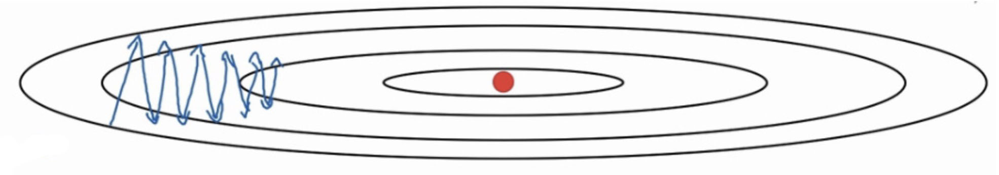
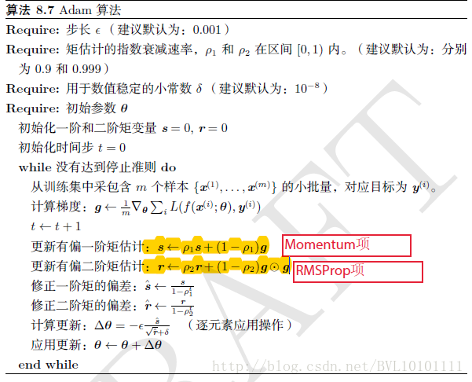

1. 主要内容
SGD，Momentum，AdaGrad，RMSProp，Adam
1.1. SGD
1.1.1 Batch Gradient Descent
在每一轮的训练过程中，Batch Gradient Descent算法用整个训练集的数据计算cost fuction的梯度，并用该梯度对模型参数进行更新： \(\Theta=\Theta-\alpha \cdot \nabla_{\Theta} J(\Theta)\) 优点：cost fuction若为凸函数，能够保证收敛到全局最优值；若为非凸函数，能够收敛到局部最优值。 缺点： ①由于每轮迭代都需要在整个数据集上计算一次，所以批量梯度下降可能非常慢 ②训练数较多时，需要较大内存 ③批量梯度下降不允许在线更新模型，例如新增实例。
1.1.2 Stochastic Gradient Descent
和批梯度下降算法相反，Stochastic gradient descent 算法每读入一个数据，便立刻计算cost fuction的梯度来更新参数： \(\Theta=\Theta-\alpha \cdot \nabla_{\Theta} J\left(\Theta ; x^{(i)}, y^{(i)}\right)\) 优点： ①算法收敛速度快(在Batch Gradient Descent算法中, 每轮会计算很多相似样本的梯度, 这部分是冗余的) ②可以在线更新 ③有几率跳出一个比较差的局部最优而收敛到一个更好的局部最优甚至是全局最优 缺点：容易收敛到局部最优，并且容易被困在鞍点
1.1.3 Mini-batch Gradient Descent
mini-batch Gradient Descent的方法是在上述两个方法中取折衷, 每次从所有训练数据中取一个子集（mini-batch） 用于计算梯度： \(\Theta=\Theta-\alpha \cdot \nabla_{\Theta} J\left(\Theta ; x^{(i : i+n)}, y^{(i : i+n)}\right)\) Mini-batch Gradient Descent在每轮迭代中仅仅计算一个mini-batch的梯度，不仅计算效率高，而且收敛较为稳定。该方法是目前深度学训练中的主流方法 上述三个方法面临的主要挑战如下： ①选择适当的学习率α较为困难。太小的学习率会导致收敛缓慢，而学习速度太块会造成较大波动，妨碍收敛。 ②目前可采用的方法是在训练过程中调整学习率大小，例如模拟退火算法：预先定义一个迭代次数m，每执行完m次训练便减小学习率，或者当cost function的值低于一个阈值时减小学习率。然而迭代次数和阈值必须事先定义，因此无法适应数据集的特点。 ③上述方法中, 每个参数的 learning rate 都是相同的，这种做法是不合理的：如果训练数据是稀疏的，并且不同特征的出现频率差异较大，那么比较合理的做法是对于出现频率低的特征设置较大的学习速率，对于出现频率较大的特征数据设置较小的学习速率。 ④近期的的研究表明，深层神经网络之所以比较难训练，并不是因为容易进入local minimum。相反，由于网络结构非常复杂，在绝大多数情况下即使是 local minimum 也可以得到非常好的结果。而之所以难训练是因为学习过程容易陷入到马鞍面中，即在坡面上，一部分点是上升的，一部分点是下降的。而这种情况比较容易出现在平坦区域，在这种区域中，所有方向的梯度值都几乎是 0。
1.2. Momentum
SGD方法的一个缺点是其更新方向完全依赖于当前batch计算出的梯度，因而十分不稳定。Momentum算法借用了物理中的动量概念，它模拟的是物体运动时的惯性，即更新的时候在一定程度上保留之前更新的方向，同时利用当前batch的梯度微调最终的更新方向。这样一来，可以在一定程度上增加稳定性，从而学习地更快，并且还有一定摆脱局部最优的能力： \(v_{t}=\gamma \cdot v_{t-1}+\alpha \cdot \nabla_{\Theta} J(\Theta)\) \(\Theta=\Theta-v_{t}\) Momentum算法会观察历史梯度\(v_{t-1}\)，若当前梯度的方向与历史梯度一致（表明当前样本不太可能为异常点），则会增强这个方向的梯度，若当前梯度与历史梯方向不一致，则梯度会衰减。
1.3. Nesterov Momentum
在小球向下滚动的过程中，我们希望小球能够提前知道在哪些地方坡面会上升，这样在遇到上升坡面之前，小球就开始减速。这方法就是Nesterov Momentum，其在凸优化中有较强的理论保证收敛。并且，在实践中Nesterov Momentum也比单纯的 Momentum 的效果好： \(v_{t}=\gamma \cdot v_{t-1}+\alpha \cdot \nabla \Theta J\left(\Theta-\gamma v_{t-1}\right)\) \(\Theta=\Theta-v_{t}\) 这里对\(\Theta-\gamma v_{t-1}\)求梯度，就是对未来进行一次展望，如果未来的梯度方向相反，则本次更新步伐降低。
1.4. Adagrad
上述方法中，对于每一个参数θi 的训练都使用了相同的学习率α。Adagrad算法能够在训练中自动的对learning rate进行调整，对于出现频率较低参数采用较大的α更新；相反，对于出现频率较高的参数采用较小的α更新。因此，Adagrad非常适合处理稀疏数据。 设\(g_{t, i}\)为第t轮第i个参数的梯度，即\(g_{t, i}=\nabla_{\Theta} J\left(\Theta_{i}\right)\)。因此，SGD中参数更新的过程可写为： \(\Theta_{t+1, i}=\Theta_{t, i}-\alpha \cdot g_{t, i}\) Adagrad在每轮训练中对每个参数θi 的学习率进行更新，参数更新公式如下： \(\Theta_{t+1, i}=\Theta_{t, i}-\frac{\alpha}{\sqrt{G_{t, i i}+\epsilon}} \cdot g_{t, i}\) 其中，\(G_{t} \in \mathbb{R}^{d \times d}\)为对角矩阵，每个对角线位置\(i, i\)为对应参数θi从第1轮到第t轮梯度的平方和。ϵ是平滑项，用于避免分母为0，一般取值1e−8。Adagrad的缺点是在训练的中后期，分母上梯度平方的累加将会越来越大，从而梯度趋近于0，使得训练提前结束。方差表示的意思时，越少更新的，方差越小，更新幅度越大。
1.5. RMSprop
RMSprop是Geoff Hinton提出的一种自适应学习率方法。Adagrad会累加之前所有的梯度平方，而RMSprop仅仅是计算对应的平均值，因此可缓解Adagrad算法学习率下降较快的问题。 在图中这样的情况时，梯度下降在横轴方向前进，在纵轴方向却会有大幅度的抖动。 \(E\left[g^{2}\right]_{t}=0.9 E\left[g^{2}\right]_{t-1}+0.1 g_{t}^{2}\) \(\Theta_{t+1}=\Theta_{t}-\frac{\alpha}{\sqrt{E\left[g^{2}\right]_{t}+\epsilon}} \cdot g_{t}\)
1.6. Adam
Adam(Adaptive Moment Estimation)是另一种自适应学习率的方法，是Momentum算法与RMSprop算法的结合。它利用梯度的一阶矩估计和二阶矩估计动态调整每个参数的学习率。Adam的优点主要在于经过偏置校正后，每一次迭代学习率都有个确定范围，使得参数比较平稳。 公式如下：
\(m_{t}=\beta_{1} m_{t-1}+\left(1-\beta_{1}\right) g_{t}\) \(v_{t}=\beta_{2} v_{t-1}+\left(1-\beta_{2}\right) g_{t}^{2}\) \(\hat{m}_{t}=\frac{m_{t}}{1-\beta_{1}^{t}}\) \(\hat{v}_{t}=\frac{v_{t}}{1-\beta_{2}^{t}}\) \(\Theta_{t+1}=\Theta_{t}-\frac{\alpha}{\sqrt{\hat{v}_{t}}+\epsilon} \hat{m}_{t}\) 对\(\hat{m}_{t} / \sqrt{\hat{v}_{t}}\)理解：根据梯度大小与梯度稳定性一起决定学习速率。越稳定更新速率越大，反之越小。天生具备退火能力。\(\alpha\)步长，\(\epsilon\):稳定化参数\(10^{-8}\)
2. 可视化
 在图中我们可以看到，Adagrad，Adadelta和RMSprop几乎立即朝着正确的方向前进，同样快速地收敛，而Momentum和NAG被引导偏离轨道，唤起了球从山上滚下来的形象。然而，NAG很快就能够纠正其进程，因为它通过向前看并提高到最低限度来提高响应速度。
在图中我们可以看到，Adagrad，Adadelta和RMSprop几乎立即朝着正确的方向前进，同样快速地收敛，而Momentum和NAG被引导偏离轨道，唤起了球从山上滚下来的形象。然而，NAG很快就能够纠正其进程，因为它通过向前看并提高到最低限度来提高响应速度。  该图显示了算法在鞍点处的行为，即一维具有正斜率的点，而另一维具有负斜率，这对我们之前提到的SGD造成困难。请注意，SGD，Momentum和NAG发现打破对称很困难，尽管后者最终设法逃脱了鞍点，而Adagrad，RMSprop和Adadelta迅速降低了负斜率。
该图显示了算法在鞍点处的行为，即一维具有正斜率的点，而另一维具有负斜率，这对我们之前提到的SGD造成困难。请注意，SGD，Momentum和NAG发现打破对称很困难，尽管后者最终设法逃脱了鞍点，而Adagrad，RMSprop和Adadelta迅速降低了负斜率。
3. 参考文献
主要参考链接： [https://blog.csdn.net/u010089444/article/details/76725843] [https://ruder.io/optimizing-gradient-descent/index.html] [https://blog.csdn.net/weixin_40170902/article/details/80092628]